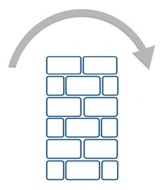

Cross Feature Communication
A best practice of feature-based development (to the extent possible) is to treat each feature as an isolated implementation. Most aspects of a feature are internal to that feature's implementation (for example, actions are typically created and consumed exclusively by logic/reducers/components that are internal to that feature).
From this perspective, you can think of each feature as it's own isolated mini application.
With that said however, we know that "no man is an island"! Any given feature ultimately exists as part of a larger application. There are cases where a feature needs to promote a limited subset of it's aspects to other features. For example, a feature may need to:
- be knowledgeable of some external state (via a selector)
- emit or monitor actions of other features
- consolidate component resources from other features - as in UI Composition
- invoke the API of other features
- etc. etc. etc.
These items form the basis of why Cross Feature Communication is needed.
To complicate matters, as a general rule, JS imports should NOT cross feature boundaries. The reason being that this cross-communication should be limited to public access points - helping to facilitate true plug-and-play.
Given all this then, how is Cross Feature Communication achieved in a way that doesn't break encapsulation?
Features need a way to promote their Public Interface to other features, and consume other feature's Public Assets.
Basic Concepts: fassets
feature-u promotes feature-based resources through something
called fassets (feature assets). This is how all Cross Feature
Communication is accomplished. You can think of this as the Public
Face of a feature.
SideBar: The term fassets is a play on words. While it is
pronounced "facet" and is loosely related to this term, it is spelled
fassets (i.e. feature assets).
The fassets terminology is consistently used in both:
the definition of resources (through the built-in
Feature.fassets aspect)and in their usage (through the
Fassets object, along with theuseFassets()Hook andwithFassets()HoC)

fassets definition
A feature can expose whatever it deems necessary through the built-in
Feature.fassets aspect). There is no real constraint on this
resource. It is truly open. Typically it is a set of functions or UI
Components, but is not limited to that. It can be a combination of UI
Components, actions, selectors, API functions, constants, or whatever
your feature needs to promote.
Here is a simple example of how fassets are defined:
export default createFeature({
name: 'featureA',
fassets: {
define: {
'openView': actions.view.open, // openView(viewName): Action
'currentView': selector.currentView, // currentView(appState): viewName
'isDeviceReady': selector.isDeviceReady, // isDeviceReady(appState): boolean
},
},
...
});
As you can see, the fassets aspect has a define
directive where resources are cataloged.
In this example, featureA is publicly promoting only three of
it's many internal aspects ... one action creator (openView) and
two selectors (currentView, and isDeviceReady).
fassets usage
To use these public resources, feature-u accumulates them from all
active features, and promotes them through the
Fassets object (emitted from launchApp()).
SideBar: There are several ways to obtain access the Fassets object
(discussed later - Obtaining fassets object).
To reference a fassets resource, simply dereference it as any other
object reference. Here is a usage example (using the definition
above):
fassets.isDeviceReady(appState)
NOTE: In addition to directly dereferencing a resource on the
fassets object, you can also use the Fassets.get() method
along with the useFassets() Hook and
withFassets() HoC (discussed later). One advantage of
these alternatives is you can utilize wildcards to match multiple
fasset resources.
federated namespace
fasset keys may contain a federated namespace (using dots -
.). When this is done, feature-u will normalize them in a
structure with depth.
You can use federated names however you wish, or not at all. In general it helps categorize or qualify assets in some way. You may want to qualify by feature name, or process type, or any app-specific structure.
As an example, the following define was enhanced (from above) to
include some qualifiers:
export default createFeature({
name: 'featureA',
fassets: {
define: {
'action.openView': actions.view.open, // openView(viewName): Action
'selector.currentView': selector.currentView, // currentView(appState): viewName
'selector.isDeviceReady': selector.isDeviceReady, // isDeviceReady(appState): boolean
},
},
...
});
and would be referenced as follows:
fassets.selector.isDeviceReady(appState)
UI Composition
A major benefit of working with React is components. Components allow you to split your UI into independent, reusable pieces.
Depending on your feature boundaries, it is very common for a given component to be an accumulation of sub-components that span several features. As a result, UI Composition is a very important part of Cross Feature Communication.
Let's build some concepts by looking at series of examples.
Consider a common feature that promotes a series of central
resources, used throughout our application. The following snippet
demonstrates how a company logo could be promoted to several UI
components.
createFeature({
name: 'common',
fassets: {
define: {
'company.logo': () => <img src="logo.png"/>, // a react component
},
},
... snip snip
});
So far nothing new has been introduced in this example. This is the same type of resource definition that we have seen previously ... it's just the resource happens to be a react component.
useFassets() Hook
useFassets() is a feature-u React Hook that
provides functional component access to fassets.
Hooks is an exciting React feature that allows you to "hook into" React state and lifecycle aspects from functional components.
Here is how a component would access a company.logo (defined
above) using Hooks:
export default function MyComponent() {
const Logo = useFassets('company.logo');
return (
<div>
<Logo/>
</div>
... snip snip
);
}
In this example, because the Logo property is a component,
MyComponent can simply reference it using JSX.
withFassets() HoC
withFassets() is a feature-u Higher-order Component
(HoC) that auto-wires fasset properties into a component. This is a
common pattern popularized by redux connect() (simplifying
component access to application state).
Here is the same example (from above) using withFassets():
function MyComponent({Logo}) {
return (
<div>
<Logo/>
</div>
... snip snip
);
}
export default withFassets({
component: MyComponent,
mapFassetsToProps: {
Logo: 'company.logo',
}
});
The withFassets() HoC auto-wires named feature assets as
component properties through the mapFassetsToProps hook. In this
example, because the Logo property is a component, MyComponent can
simply reference it using JSX.
Resource Contracts
It is common for UI Composition to be represented as a contract, where a component in one feature has a series of injection needs that are to be supplied by other features.
The fassets aspect has additional constructs to facilitate
this contractual arrangement, allowing feature-u to provide more
validation in the process.
Rather than just defining resources in one feature and using them in another:
A given feature can specify a series of injection needs using the
fassets.usedirective. This identifies a set of injection keys that uniquely identify these resources.Other features will supply this content using the
fassets.defineUsedirective, by referencing these same injection keys.
This represents more of a pull philosophy. It gives feature-u more knowledge of the process, allowing it to verify that supplied resources are correct.
SideBar: The define and defineUse directives are very similar,
and in some cases can be used interchangeably. The defineUse
directive does everything define does but enforces the additional
constraint that it must match a corresponding use request.
Therefore, if your intent is to to supply content that is formally
requested by another feature (via the use directive), defineUse is
preferred (even though it can be accomplished by define),
because typos can be caught on the definition side.
Following is a composition example that uses this more formal definition. In this example our application has a MainPage, that promotes a variety of sub-components: a ShoppingCart and a Search screen. Because these sub-components are managed by separate features, we need a way to pull them into the MainPage.
Here is our main feature:
main feature
src/features/main/feature.js
createFeature({ name: 'main', fassets: { use: [ // <--- use externally sourced sub-content 'MainPage.cart.link', 'MainPage.cart.body', 'MainPage.search.link', 'MainPage.search.body', ], }, ... snip snip });The
mainfeature simply specifies it's need for externally sourced sub-content. This is a contract (so to speak) stating that it plans to render this content.Here is the manifestation of this contract:
src/features/main/comp/MainPage.js
export default function MainPage() { const Logo = useFassets('company.logo'); // from our prior example const CartLink = useFassets('MainPage.cart.link'); const CartBody = useFassets('MainPage.cart.body'); const SearchLink = useFassets('MainPage.search.link'); const SearchBody = useFassets('MainPage.search.body'); return ( <div> <div> {/* header section */} <Logo/> </div> <div> {/* left-nav section */} <CartLink/> <SearchLink/> </div> <div> {/* body section */} <CartBody/> <SearchBody/> </div> </div> ); }
The following snippets are taken from other features that supply the definitions for the content to inject:
cart feature
src/features/cart/feature.js
createFeature({ name: 'cart', fassets: { defineUse: { 'MainPage.cart.link': () => <Link to="/cart">Cart</Link>, 'MainPage.cart.body': () => <Route path="/cart" component={ShoppingCart}/>, }, }, ... snip snip });search feature
src/features/search/feature.js
createFeature({ name: 'search', fassets: { defineUse: { 'MainPage.search.link': () => <Link to="/search">Search</Link>, 'MainPage.search.body': () => <Route path="/search" component={Search}/>, }, }, ... snip snip });
Two external features (cart and search) define the content that is requested by the main feature.
The fassets.defineUse directive requires that the resource keys match a
fassets.use feature request. This is the contract that provides
feature-u insight when enforcing it's validation.
SideBar: Because we are also dealing with navigation, we introduce
react-router into the mix (with the Link and Route
components). Because of RR's V4 design, our routes are also handled
through component composition (see Feature Based Routes for
more information).
Wildcards (adding dynamics)
In our prior example we explicitly define each injection key, and strategically place it in our parent component. While this may be necessary in some cases, typically more dynamics are required (allowing features to introduce their content autonomously).
This can be accomplished by using wildcards (*).
Here is our refined main feature (NOTE: the definitions
from the defining features are the same, so they are not repeated):
main feature
src/features/main/feature.js
createFeature({ name: 'main', fassets: { use: [ 'MainPage.*.link', 'MainPage.*.body', ], }, ... snip snip });Because our specification includes wildcards, a series of definitions will match!
Here is our refined
MainPagecomponent:src/features/main/comp/MainPage.js
export default function MainPage() { const Logo = useFassets('company.logo'); // from our prior example const mainLinks = useFassets('MainPage.*.link'); // find matching const mainBodies = useFassets('MainPage.*.body'); return ( <div> <div> {/* header section */} <Logo/> </div> <div> {/* left-nav section */} {mainLinks.map( (MainLink, indx) => <MainLink key={indx}/>)} </div> <div> {/* body section */} {mainBodies.map( (MainBody, indx) => <MainBody key={indx}/>)} </div> </div> ); }
When useFassets() (or withFassets()) encounters wildcards (*), it merely
accumulates all matching definitions, and promotes them as arrays.
Our MainPage component no longer explicitly reasons about each
injection.
SideBar: Notice that our mapping process used the array index
for our React key. This technique actually works in a majority of
cases, because the set of fassets "in use" typically does not
change. With that said, there is an alternate approach (using the
@withKeys directive) that injects the unique fassetsKey into the
mix. Please refer to: React Keys (in array processing).
Through this implementation, any feature may dynamically inject itself in the process autonomously! In addition, this dynamic implicitly handles the case where a feature is dynamically disabled (very kool indeed)!!
Wildcard Processing
This section provides additional detail related to wildcard processing. For the examples below, please assume the following resource definitions:
fassetsKey Resource
===================== ========
'company.logo' 1
'MainPage.cart.link' 2
'MainPage.cart.body' 3
'MainPage.search.link' 4
'MainPage.search.body' 5
'my.fun.object' 6 ... { greet: 'hello' }
Wildcard Characters:
Currently, only one wildcard character is supported:
*: Matches zero or more characters. Can also span multiple nodes (i.e. the dots.of a federated namespace).Examples:
fassetsKey Matches ===================== ============= 'company.logo' 1 '*link' [ 2, 4 ] 'MainPage.*.link' [ 2, 4 ] 'MainPage.*.body' [ 3, 5 ] 'MainPage.*' [ 2,3,4,5 ] '*a*' [1,2,3,4,5 ] '*' [1,2,3,4,5,6] 'ouch' undefined 'WowZee*WooWoo' []
Wildcard Matching:
The following pattern matching rules are in effect:
Pattern matching is case-sensitive. It is worth noting that
fassetsKeydefinitions are also case-sensitive.Examples:
fassetsKey Matches ===================== =========== 'MainPage.*.link' [2,4] 'mainPage.*.link' []By default, the entire entry is matched. In other words an implicit start/end anchor is applied. This heuristic can be altered by simply injecting wildcards at the start/end of your expression.
Examples:
fassetsKey Matches ===================== =========== 'Page.*.link' [] '*Page.*.link' [2,4]Matches are restricted to the actual fassetKeys registered through the
fassets aspectdefine/defineUsedirectives. In other words, the matching algorithm will not drill into the resource itself (assuming it is an object with depth).Examples:
fassetsKey Matches ===================== ========================== 'my.*.object' [6] ... { greet: 'hello' } 'my.*.object.greet' []
Resource Order (in wildcard processing)
The order in which resources are promoted when wildcards are in use, is feature expansion order. In other words, the same order that features are registered.
React Keys (in array processing)
As you probably already know, React requires a key attribute when
injecting elements of an array.
You may have noticed (in the wildcard example - above), we are using
array indices for our keys. In some cases this may be considered an
anti-pattern, leading to inefficiencies in DOM reconciliation. It
really depends on the mutability status of the array. Remember, the
key must only be unique among its siblings - not globally (please
refer to the React docs
here).
In the case of fasset usage, key indices will in fact work in most cases - assuming there is no variability in the promoted set of fasset resources (a normal case).
If however there is some conditional logic involved, you may request
useFassets() and withFassets() to supply a [fassetsKey, resource] pair, by
using the @withKeys suffix. This is an ideal solution because
feature-u guarantees fassetsKey to be unique.
// mapping snippet ...
mainLinks: 'MainPage.*.link@withKeys', // @withKeys: request [fassetsKey, resource] pairs
// mainLinks: [['MainPage.cart.link', cartLinkResource],
// ['MainPage.search.link', searchLinkResource]],
// array injection snippet ...
{mainLinks.map( ([fassetsKey, MainLink]) => <MainLink key={fassetsKey}/>)}
Resource Validation
Resource validations can optionally be specified through the
fassets aspect use directive. This includes:
- optionality (required/optional)
- and data type/content
By default, the use directive simply accepts an array of strings
(the resources keys which will be used). This represents resources
that are required of type any. You can change this default by
replacing each string with a two element array containing the resource
key followed by an options object:
[ '$fassetsKey', { // resource key with options object
required: true/false, // DEFAULT: true
type: $validationFn, // DEFAULT: any
}]
Required items disallow the
undefinedvalue.Type/content validation is specified through a function reference. You may define your own validations, or use one of the canned validators provided by feature-u. Please refer to
fassetValidationsfor a list of the pre-defined validators, as well as the validation API.
Here is an example that employs validations. Notice the mix of both strings (with their default semantics), and the options object (specifying the validation constraints):
createFeature({
fassets: {
use: [
'MainPage.*.link', // DEFAULT: required of type any
['MainPage.*.body', {required: false, type: fassetValidations.comp}],
],
},
});
Does Feature Exist
The Fassets object can be used to determine if a feature
is present or not. If a feature does not exist, or has been disabled,
the Fassets.hasFeature() will return false.
It could be that
featureAwill conditionally usefeatureBif it is present.if (fassets.hasFeature('featureB') { ... do something featureB related }It could be that
featureCunconditionally requires thatfeatureDis present. This can be checked in theappWillStart()Application Life Cycle Hook.appWillStart({fassets, curRootAppElm}) { assert(fassets.hasFeature('featureD'), '***ERROR*** I NEED featureD'); }
NOTE: In addition to fassets.hasFeature(featureName) it is also
possible to reason over the existence of well-known fasset resources
that are specific to a feature.
fassets recap: Push or Pull
At this point, it may be useful to summarize the three
fassets aspect directives: define, use, and
defineUse ... highlighting two broad use cases.
As it turns out, when it comes to the definition and consumption of fasset resources (covered in the prior sections), there are two broad philosophies: push or pull.
Push - "throw it over the wall" 
Definition:
When defining resources in a push philosophy the
definedirective is crucial. Here the supplier is simply publicly promoting a resource for other features to use (take it or leave it). The supplier is merely saying: "this is my Public Face".Consumption:
Normally, in a push philosophy, the consumer simply accesses the resource without any
usedirective (throughFassets objectoruseFassets()Hook andwithFassets()HoC).Optionally however, the consumer may employ the
usedirective. Here they are simply providing feature-u with more information, so the system will fail fast (at startup time) when the resource is not defined. In other words, there would never be a need for the consumer to check if the resource is defined (assuming theusecontract is "required"). Rather, that constraint is achieved by feature-u. Note: This scenario highlights that multiple features can specify the sameusedirective, providing theirResource Validationdoes not conflict.
Pull ... "a resource contract"

Consumption:
When using a pull philosophy, the
usedirective is more critical. In this case the consumer is saying: "I plan to use this resource from whatever feature(s) wish to supply it". This is the first half of aResource Contract!Typically a
usecontract is made with wildcards, although not required. Wildcards allow external features to inject their content autonomously.SideBar: It is important that the consumer fulfill this contract by programmatically accessing the resource defined in it's
usecontract (throughFassets objectoruseFassets()Hook andwithFassets()HoC). This is outside the control of feature-u.Definition:
When defining a resource in the pull philosophy, the supplier should use the
defineUsedirective (even though adefinewould technically work). Here the supplier is saying "I am supplying this resource under contract". In this case the system will fail fast (at startup time) if there is NO fulfillment of this contract (for example a typo).
Obtaining fassets object
Broadly speaking, Public Facing fasset resources can be obtained either by:
using the
useFassets()Hook (for UI Components),using the
withFassets()HoC (for UI Components),or by directly referencing the
Fassets objectprogrammatically.
The first two options implicitly accesses fassets (under the covers) using a
react context. The last option requires direct programmatic
access to the Fassets object ... of which there are five
ways to achieve:
Use the
fassets parametersupplied through feature-u's programmatic APIs ... for code that is under the control of feature-u (for example, life-cycle hooks, or logic hooks, etc.).Obtain fassets from Hooks... for react components (using the specialuseFassets()'.'keyword, obtaining thefassetsobject itself).Inject fassets comp props... for react components (using the specialwithFassets()'.'keyword, injecting thefassetsobject itself).Use
Managed Code Expansion... forAspectContentdefinitions requiringfassetsduring inline code-expansion (employing theexpandWithFassets()wrapper function).import fassetsfrom your application mainline ... for code that is outside the control of feature-u (providing the reference is not needed during inline code-expansion).
You may be asking yourself: "Why so many techniques"? Let's delve into this just a bit ...
Generally speaking, programmatic access to the
Fassets object is complicated by whether it is needed
during inline code-expansion or not.
The fact that
launchApp()accumulates fasset resources, means that it must run to completion beforefassetsis made available through an import.Furthermore, the goal of restricting cross-feature imports requires that the
fassetsobject be used in place of imports.
In spite of these seemingly conflicting artifacts, the goal of
restricting cross-feature imports is most certainly a worthy
objective! The bottom line is that
Managed Code Expansion comes to the rescue, and
"fills the gap" when needed.
Accessing external feature resources in a seamless way is a rudimentary benefit of feature-u that alleviates a number of problems in your code, making your features truly plug-and-play.
SideBar: It is possible that a module may be using more than one of
these access techniques. As an example a logic module may have to use
expandWithFassets() to access fassets at code-expansion
time, but is also supplied fassets as a parameter in it's functional
hook. This is perfectly fine, as they will be referencing the exact
same fassets object instance.
Let's take a closer look at each of these access points.
fassets parameter
The simplest way to access the Fassets object is through
the programmatic APIs of feature-u, where fassets is supplied as
a parameter. This covers any process that is under the control of
feature-u, for example:
app life-cycle hooks:
route hooks (PKG:
feature-router):routeCB({fassets, appState}): rendered-component (null for none)logic hooks (PKG:
redux-logic):createLogic({ ... transform({getState, action, fassets}, next) { ... }, process({getState, action, fassets}, dispatch, done) { ... } })
Obtain fassets from Hooks
For react functional components, you can obtain the
Fassets object by using the special
useFassets() '.' keyword. This emits the fassets
object itself (in the same tradition as "current directory").
NOTE that this is also the same result of not passing any
parameter to useFassets().
When using the useFassets() Hook you have a choice ... you
can obtain the selected assets as needed, or the the entire fassets
object, or both ... it's really a personal preference.
Here is an example:
export default function MyComp() {
const fassets = useFassets('.'); // same as: useFassets()
const Logo = fassets.company.logo;
// ... React's useSelector()
const eggCount = useSelector((appState) => fassets.selectors.getEggCount(appState), [fassets]);
return (
<div>
<Logo/>
<p>My egg total: {eggCount}</p>
</div>
... can use fassets here too (if desired)
);
};
Inject fassets comp props
For react components, you can inject the Fassets object
directly in your component properties by using the special
withFassets() '.' keyword. This emits the fassets
object itself (in the same tradition as "current directory").
When using the withFassets() HoC you have a choice ... you
can inject selected assets as needed, or the the entire fassets
object, or both ... it's really a personal preference.
As it turns out, this can even be used to introduce fassets into
other HoCs, such as redux connect() using it's ownProps parameter.
Here is an example:
const MyComp = ({fassets, Logo, eggCount}) => {
return (
<div>
<Logo/>
<p>My egg total: {eggCount}</p>
</div>
... can use fassets here too (if desired)
);
};
const MyConnectedComp = connect( // standard redux connect
(state, {fassets}) => ({ // ... fassets available in ownProps (via withFassets() below)
eggCount: fassets.selectors.getEggCount(state), // ... uses external feature selector (via fassets)
}),
)(MyComp);
export default withFassets({
mapFassetsToProps: {
fassets: '.', // ... introduce fassets into props via the '.' keyword
Logo: 'company.logo',
}
})(MyConnectedComp);
If you are of a "functional" mindset, here is the same example using functional composition:
import {compose} from 'redux';
const MyComp = ({fassets, Logo, eggCount}) => {
return (
<div>
<Logo/>
<p>My egg total: {eggCount}</p>
</div>
... can use fassets here too (if desired)
);
};
export default compose( // combine withFassets() and redux connect() using functional composition
withFassets({
mapFassetsToProps: {
fassets: '.', // ... introduce fassets into props via the '.' keyword
Logo: 'company.logo',
},
}),
connect((state, {fassets}) => ({ // ... fassets available in ownProps (via withFassets())
eggCount: fassets.selectors.getEggCount(state), // ... uses external feature selector (via fassets)
})),
)(MyComp);
Managed Code Expansion
To obtain early access to the Fassets object (during
inline code-expansion), simply wrap your AspectContent
in the expandWithFassets() utility.
There are two situations that make accessing fassets problematic,
which are: a: in-line code expansion (where fassets may not
be fully defined), and b: order dependencies (across
features).
To illustrate this, the following redux-logic module is
monitoring an action defined by an external feature (see *1*).
Because this fassets reference is made during code expansion time, the
import will not work, because the fassets object has not yet been fully
defined. This is a timing issue.
import fassets from '~/app'; // *1*
export const myLogicModule = createLogic({
name: 'myLogicModule',
type: String(fassets.featureB.actions.fooBar), // *1* fassets NOT defined during in-line expansion
process({getState, action}, dispatch, done) {
...
},
});
When AspectContent definitions require the
Fassets object at code expansion time, you can wrap the
definition in a expandWithFassets() function. In other
words, your aspect content can either be the actual content itself
(ex: a reducer), or a function that returns the content.
Your callback function should conform to the following signature:
API: expandWithFassetsCB(fassets): AspectContent
When this is done, feature-u will invoke the
expandWithFassetsCB() in a controlled way, passing the fully
resolved Fassets object as a parameter.
To accomplish this, you must wrap your expansion function with the the
expandWithFassets() utility. The reason for this is that
feature-u must be able to distinguish a
expandWithFassetsCB() function from other functions (ex:
reducers).
Here is the same example (from above) that that fixes our
problem by replacing the fassets import with expandWithFassets():
// *1* we replace fassets import with expandWithFassets()
export const myLogicModule = expandWithFassets( (fassets) => createLogic({
name: 'myLogicModule',
type: String(fassets.featureB.actions.fooBar), // *1* fassets now is fully defined
process({getState, action}, dispatch, done) {
...
},
}) );
Because expandWithFassetsCB() is invoked in a controlled way
(by feature-u), the supplied fassets parameter is guaranteed to be
defined (issue a). Not only that, but the supplied fassets object
is guaranteed to have all public facing feature definitions resolved
(issue b).
SideBar: A secondary reason expandWithFassets() may be
used (over and above fassets injection during code expansion) is to
delay code expansion, which can avoid issues related to
(legitimate but somewhat obscure) circular dependencies.
import fassets
For run-time functions that are outside the control of feature-u,
simply import fassets from your application mainline.
Your mainline exports the launchApp() return value
... which is the Fassets object.
src/app.js
// launch our app, exposing the feature-u Fassets object (facilitating cross-feature communication)!
export default launchApp({
...
});
While imports are a simple and straight forward process, they cannot be
used when the reference is needed during inline code-expansion
(because launchApp() must run to completion).
As it turns out, importing fassets is not usually necessary, because
most cases are covered through the alternate means.
For sake of example, let's consider a somewhat contrived example, where a piece of code needs to close the leftNav menu. This function is provided by a Public Facing resource defined in the leftNav feature.
import fassets from '../app';
function closeSideBar() {
fassets.leftNav.close();
}